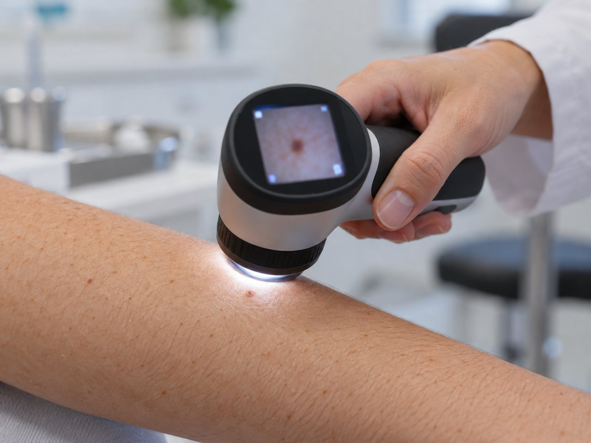
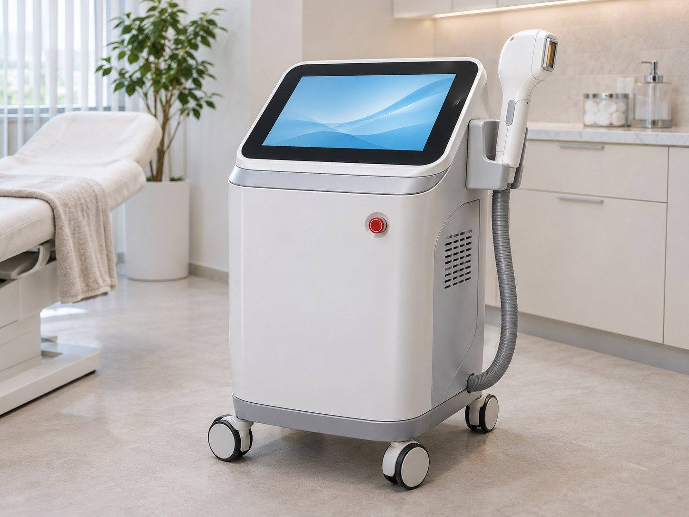
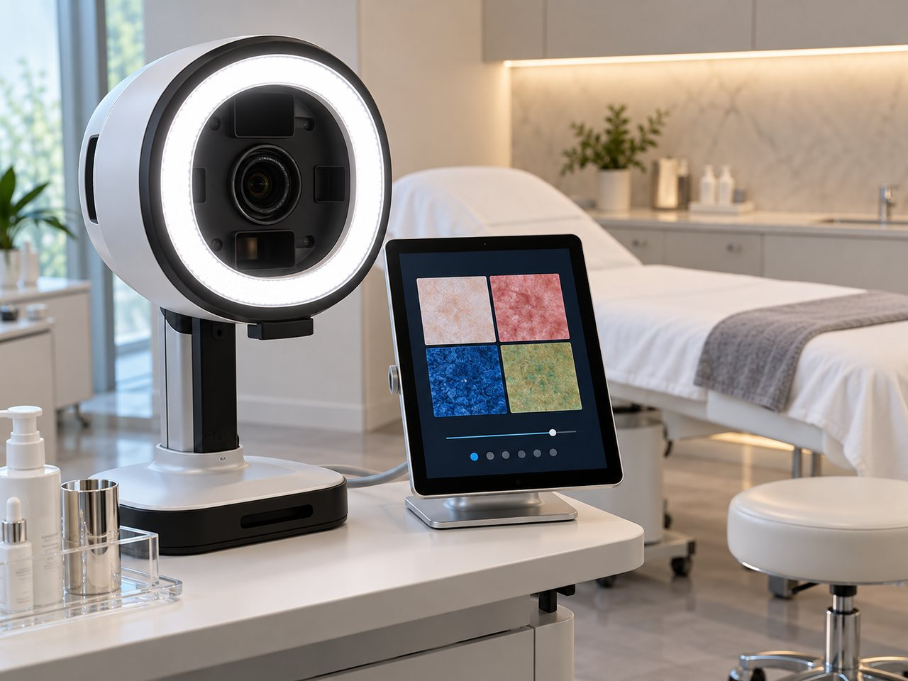
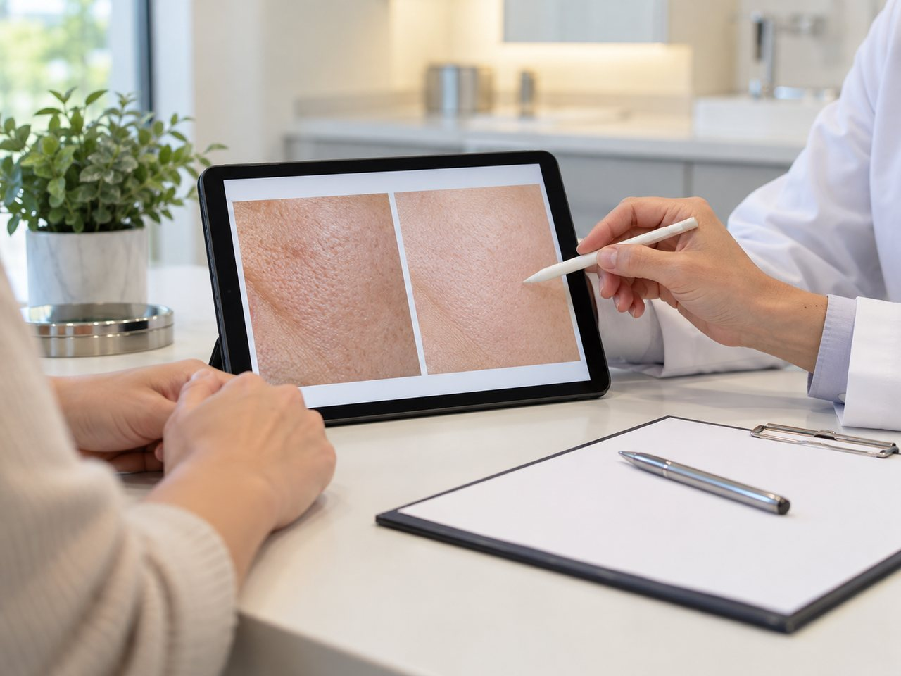
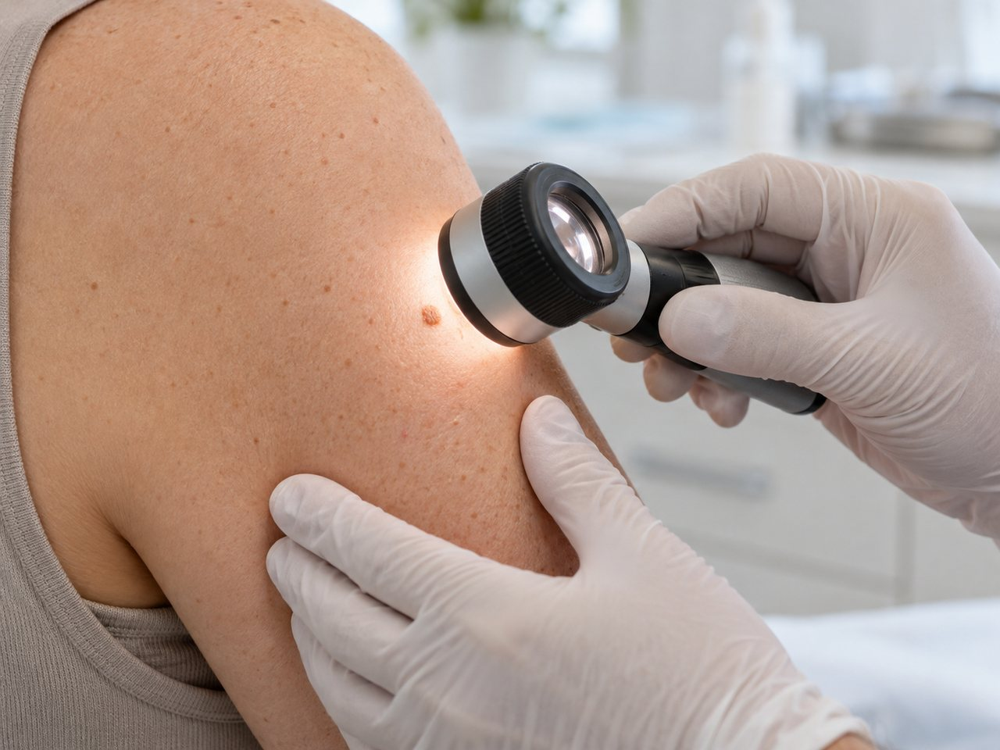
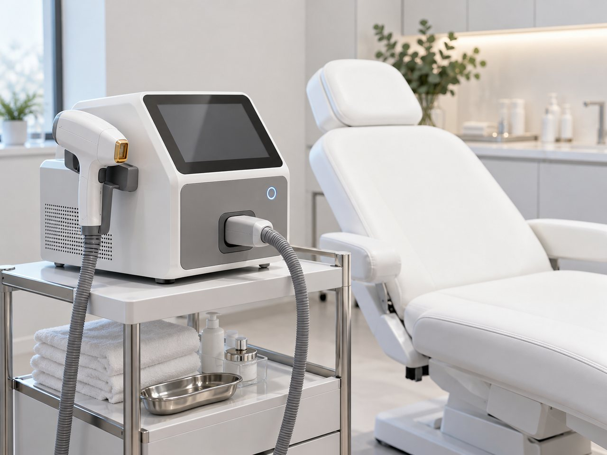
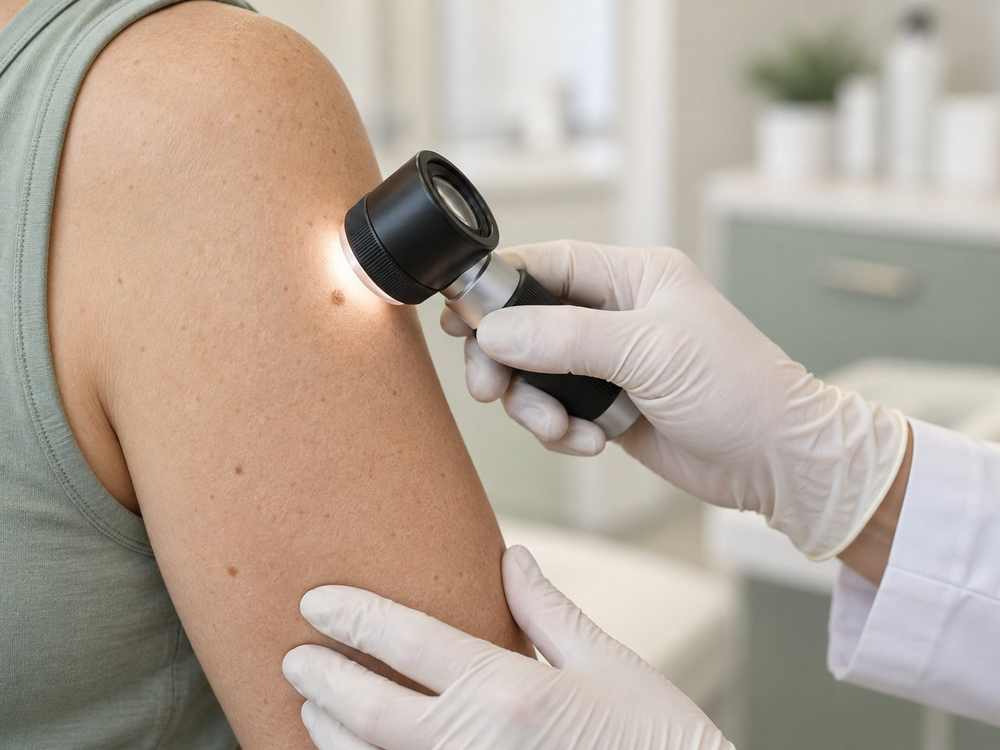
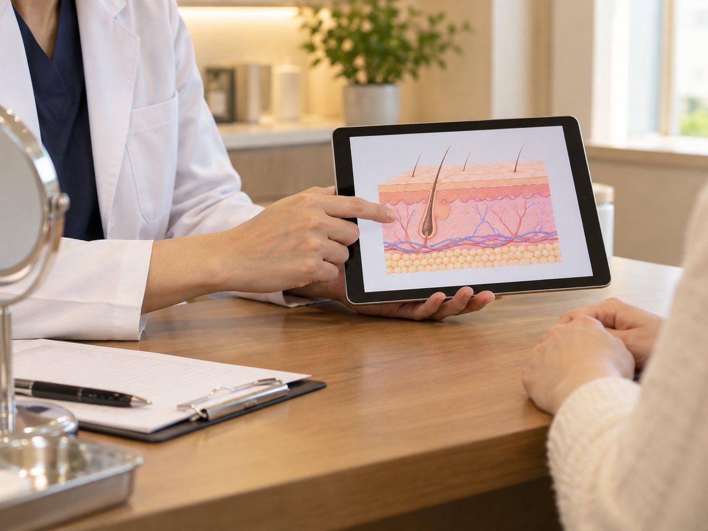
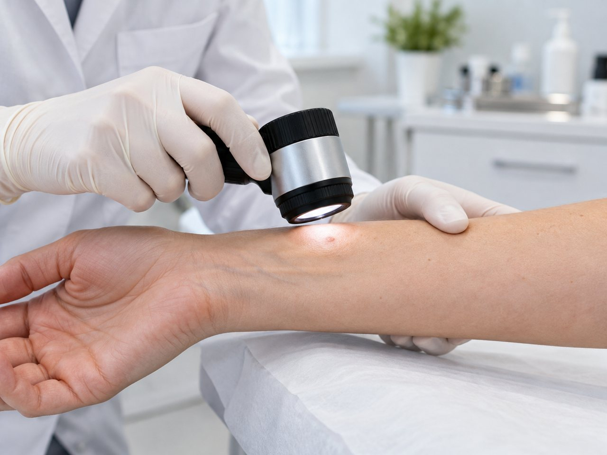

Redness, Vessel
홍조, 혈관
얼굴이 붉어지는 증상과 가는 혈관 변화,
피부 표면의 잔혈관부터 도드라진 정맥까지
피부 혈관 변화에 원인부터 접근하는
라온피부의원의 홍조 혈관센터입니다.
안면 홍조, 딸기코
- 약한 자극에도 얼굴이 붉어지기 쉬운 안면 홍조
- 얼굴 중앙에 되풀이되는 붉은 염증과 화끈거림
- 코 주변이 붉어지고 모세혈관이 확장되는 딸기코 증상
이런 증상이 보인다면 단순한 피부 트러블보다
오래 지속되는 안면홍조라면 대표 원인인 주사(rosacea)를 살펴볼 수 있습니다.
주사는 볼·코·이마·턱처럼 얼굴에 오래 남는 홍조를
붉은 농포가 오돌토돌하게 반복되는 만성 염증성 질환입니다.
안면 홍조, 딸기코
- 안면 홍조
- 열감, 따가움,
화끈거림 - 모세혈관
확장 - 염증성
구진·농포 - 심한 경우 코가 붉고
울퉁불퉁해지는
딸기코(주사코) 진행
라온피부의원의 맞춤형 치료 솔루션

STEP. 01 정확한 진단
안면홍조와 주사 피부염 관리는
세밀한 상태 확인이 첫 단계입니다.
STEP. 03 피부 진정 & 장벽 복원
민감해진 피부가 차분해지도록
진정시켜줍니다.
STEP. 02 홍조 레이저 시술
혈관과 진피층 상태를 함께 살피는
피부 상태에 맞춰 레이저 관리를 시행합니다.
STEP. 04 재발 방지 습관 코칭
피부과 전문의가 현재 피부에 맞는
일상에서 실천할 피부 관리법도 안내합니다.
STEP. 01 정확한 진단
안면홍조와 주사 피부염 관리는
세밀한 상태 확인이 첫 단계입니다.
STEP. 02 홍조 레이저 시술
혈관과 진피층 상태를 함께 살피는
피부 상태에 맞춰 레이저 관리를 시행합니다.
STEP. 03 피부 진정 & 장벽 복원
민감해진 피부가 차분해지도록
진정시켜줍니다.
STEP. 04 재발 방지 습관 코칭
피부과 전문의가 현재 피부에 맞는
일상에서 실천할 피부 관리법도 안내합니다.

입술 정맥호
푸른빛 또는 보랏빛의 작은 혹처럼 나타나며,
표면에서 도톰하게 만져지기도 합니다.
입술 아래의 가느다란 정맥이 여러 원인으로 도드라져 보이며,
저절로 없어지지 않고 크기가 변하는 일이 반복됩니다.
정맥호가 오래 지속되면 주변 입술색과 달라
외관상 신경 쓰일 수 있고 무심코 깨물다가
출혈이 멎지 않고 이어지는 경우도 있을 수 있습니다.
라온피부의원에서는 비수술적 레이저 치료를 통해
입술의 자연스러운 윤곽과 빛깔이 돌아오도록 진료 과정에서 함께 살펴드립니다.

라온피부의원 정맥호 치료의 특별함

- 01절개하지 않고 정밀한 레이저로 병변을 관리합니다.
- 02치료 시간이 짧아 통증과 회복에 대한 부담이 비교적 적습니다.
- 03봉합사를 따로 제거하거나 소독할 필요가 적어 일상으로 돌아가는 시간을 줄일 수 있습니다.
- 04절개 수술에 비해 흉터 부담을 덜 수 있습니다.

얼굴 정맥 치료
얇은 얼굴 피부 아래에는 혈액 순환을 담당하는 정맥이 지나갑니다.
생활하면서 푸른 정맥이 피부 위로 도드라지는 경우도 있습니다.
이러한 얼굴 정맥 돌출에는 노화와 피부 얇아짐, 유전, 자외선 노출이 등으로
인해 발생할 수 있으며, 눈 아래와 광대, 관자처럼 혈관이 피부 표면에 가까운
위치한 부위에서 자주 나타납니다.
격한 운동이나 감정 변화가 있을 때 피부 정맥이
피부 밖으로 도드라지면 외관상 신경 쓰일 수 있고
상태에 따라 시술 치료를 고려할 수 있습니다.

-
Case 01|
눈 밑이나 광대에 푸른 혈관이 눈에 띄는 경우
-
Case 02|
화장으로도 가려지지 않는 도드라진 혈관이 고민인 상황
-
Case 03|
사진이나 조명에서 얼굴빛이 어둡고 그늘져 보이는 때
-
Case 04|
예전보다 정맥이 점차 선명하게 보인다고 느끼는 때
라온피부의원에서는
도드라진 얼굴 혈관을 비수술적 레이저로 관리하며
피부 반응에 맞춰 개선을 돕습니다.
얼굴 정맥 치료에서는 혈관의 크기를 줄이는
레이저 치료 가능성을 먼저 검토합니다.
하지 정맥류처럼 부담이 큰 수술은
얼굴 부위에서 망설이기 쉽기 때문입니다.

라온피부의원의
얼굴 정맥 레이저 관리의 특징
-

혈관에만 선택적으로
혈관 병변에 반응하는 레이저를 적용 -

주변 조직 손상을
최소화하는 노하우 -
치료 시간이 비교적 짧고 국소 마취 없이도
가능할 정도의 통증 -
시술 직후부터
일상생활 복귀 가능
-
 피부에 비치는 모세혈관과 잔실핏줄
피부에 비치는 모세혈관과 잔실핏줄 -
체리 혈관종
모세혈관 확장증, 체리 혈관종
피부에 비치는 모세혈관과 잔실핏줄피부 표면 가까이 자리한 작은 혈관들이
혈관이 비정상적으로 늘거나 가늘어지면서 피부 밖으로 붉은 선 또는
거미줄처럼 가느다란 혈관이 드러나는 증상입니다.
체리 혈관종양성 혈관종 가운데 하나이며 피부에서 흔히 보이는 혈관종입니다.
피부에 작고 붉거나 자주색인 점처럼 보이는데,
체리처럼 둥근 모양으로 보여 체리 혈관종이라는 이름이 붙었습니다.
라온피부의원의 피부 혈관 솔루션
도드라진 실핏줄과 체리 혈관종을 세심하게 살피며,
혈관 레이저를 활용해 관리합니다.
엑셀브이 플러스 혈관 레이저피부에 드러나는 붉은 실핏줄, 즉 모세혈관확장증은
안면홍조·주사 피부염·딸기코처럼 혈관과 관련된 질환에
혈관 관리에 초점을 둔 전문 레이저입니다.
치료 간격은 어떻게 정하면 좋을까요?
많은 경우의 상황, 1~3회 관리로도 눈에 띄는 개선이 할 수 있고
피부 컨디션에 따라 간격을 두고 주기적 진료도 할 수 있습니다.